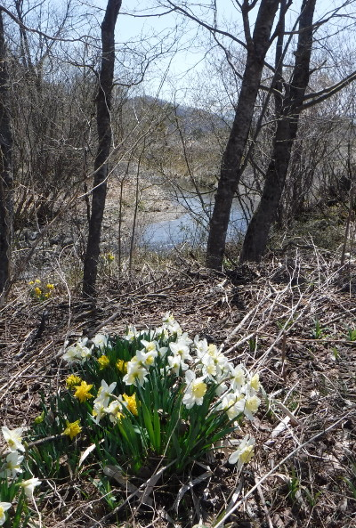
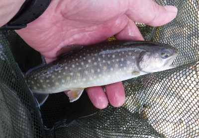
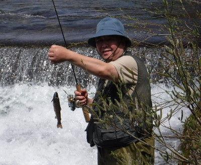
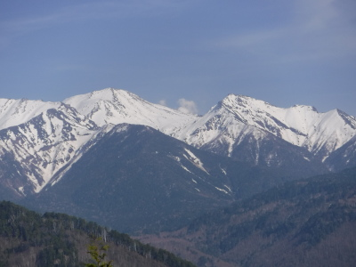

釣行日誌 故郷編
2018/04/22 水仙の咲く流れの畔で、天国と地獄
待ちに待った日曜日が来た。今年の初戦である。朝６時に叔父が迎えに来てくれて、ロッドケースと重たい荷物を積み込んで出発する。途中、スーパーで弁当とお茶を買い、現場近くのコンビニで遊漁券を購入する。以前の倍に値上がりして一日2,000円はちょとイタイが、やむを得まい。
今日は叔父が珍しく高速道路を使ったので、釣り場に着いたのは10時過ぎであった。さすがにウェットウェーディングにはまだ水が冷たいので、昨年きっちり穴埋め修理を施しておいたウェーダーとウェーディングシューズを履く。靴のサイズはぴったりで履き心地も良い。
車を停めた空き地からすぐ下の二段堰堤のポイントは叔父に譲り、僕は少し上流にある小沢の合流点から入渓することにして歩き出す。豊橋でも日中暑くなると言う天気予報であったが、フリース地の長袖シャツではこの高原でも暖かいを通り越して暑いくらいである。小沢の出会いの土手に、きれいな野生の水仙が咲き乱れていたので、思わず足を止めて写真を撮す。春の訪れを感じさせる一コマである。

小沢づたいに降りて河原に立ち、少々渇水気味の流れを徒渉する。目指すポイントは合流点の藪に覆われた深みである。足音を忍ばせて流れの畔に立ち、突き出した枝にミノーを掛けないように注意して下流側の流心に振り込む。ナントカの一つ覚えでもあるドクターミノーの赤金シンキングがリーリングとともに泳ぎだし、核心部分を通過する。一度、二度、三度。しかし反応が無い。少し歩み出して川の真ん中から藪の真下を狙う。流れに押されて引きにくいが、小沢の流れ込みに近いゴロタ石の陰を引いてみる。やはり反応は無い。もう一度、と思ってミノーを投げると枝の上を通過して向こうに落ちた。
『ありゃりゃ！』
慌てて引き戻すと枝にフックが掛かるので、ゆっくりと巻き取ってきて、ヒョイッとかわすタイミングで引っ張って枝をやり過ごす。ミノーは深みの真上に落ちたが、あきらめずに引いてみる。その後、しつこく数回試みたものの、今日はここでは出ないようなので、静かに下流へと歩みを進め、深みの尻から瀬の中を探ってゆく。右岸側は護岸ブロック、左岸側は葦が密生しているので、左右まんべんなくカバーしつつ、太腿の深さを下流へ進む。一斉に芽を吹き出した木立に囲まれつつ流れの中を歩いて行くと、水圧がウェーダーを押さえるのが感じられ、釣りシーズンの到来を心から満喫する。
瀬の終わりまでキャストを繰り返したが、何も起こらなかったので、次の小淵まで歩いてゆき、キャストを続ける。反応は無い。その次の小淵、二股の太い方の流れ、葦の際などを順に探ってゆくがアタリも無く魚影の揺らめきも見られない。そうこうしているうちに叔父の入った二段堰堤まで来てしまった。叔父の姿は無いので、おそらく下流へ向かったものと推定して、そこで土手を上り道路へ出た。しばらくすると百メートルほど下流側に叔父の姿が現れ、ガードレールを乗り越えて道路へ出てきた。車まで歩いて戻ってきた叔父に聞くと、二段堰堤で尺物が出たという。ええっ！？と驚き、スマホの写真を見せてもらうと、なるほど良い型の岩魚が草の上に横たわっているのが写っている。
『こりゃやられた！』
内心悔しかったが、ぐっとこらえて車に乗り込み、次のポイントへ向かう。
国道の橋のたもとに空き地があるので、いつものようにそこへ車を入れる。ベストを着てロッドを持って橋の上から覗くと、橋の真下の深みに20～24cmほどの魚影が６つほど見える。ゆらゆらと動き回って、中には水面で虫を補食しているのも居る。放流されたばかりの連中かもしれない。
「居ますねぇ！」
二人してほくそ笑みつつ、大回りをして橋の上流側から河原に降り、叔父は一つ上の淵を目指し、僕は群泳している岩魚たちを狙って橋桁の下へと静かに立ち込んだ。ちょっと距離がある上に、橋桁の下を低くミノーを通さなければならないので、アンダーハンドで低い弾道で投げ込む。一投目はちょうどライズのあった付近に着水したので、ちょっと待って沈めてからリーリングを始める。
『来るかな来るかな？』
何も起こらない。数回投げたがなしのつぶて。
『おかしいなぁ....』
赤金では色が派手すぎるかと、ヤマメカラーに交換して投げてみるが、やはり反応は無い。陽気も良いので岩魚たちは水面の羽虫に気を取られているのかもしれなかった。
上流を攻めていた叔父が引き返して来るまで粘ってみたが、全くの総スカンを食らってしまった。
『こりゃ、今日はひょっとしてボウズか？』
少々弱気になって、ルアーを巻き取り、叔父と二人で橋の下流から農道へと上がる。再び車に乗り込み、次のめぼしいポイントへと移動する。この頃は叔父も長時間の歩行がしんどくなってきているので、車で移動して入渓しやすいポイントを拾いながら釣るようなスタイルになっている。
しばらく国道沿いを走り、別の沢のいつものポイントに移って攻めたが水が少なすぎて芳しくない。それじゃぁ、と言って本川に戻り、別の二段堰堤のポイントへ入る。叔父は上流へ向かい、僕は堰堤直下の深みを攻めるべく土手を降りてゆく。以前と比べてだいぶ渓相が変わってしまったが、平坦な流れの続くこの本川では、唯一と言って良い好ポイントになっている。堰堤下には、流れ落ちる水勢を弱めるためのコンクリート製護床ブロックが敷き詰められているので、いわゆる滝壺のような淵にはなっていないが、ブロックの途切れたところからしばらくの区間は泡立つ深みになっている。葦をかき分けて水面に立ち、足下の深みを脅かさないように注意しながら対岸へキャスト、リーリング。水の色は魅惑的で、ざわめく流れには何かが居そうである。数投のちに流水中を茶色の魚影が走った。コクンッとアタリがあり、ロッドに重みが伝わり、水面に伸びるラインの先が対岸の葦の根元を上流へと徐々に動き始める。
『おっ！ こりゃ大きいかっ？』
流れを歩み下りながら竿を立ててラインを巻き取ってくると、蛍光色の延長線上に魚影が見えた。全然大きくないが、エラの後ろあたりにスレで掛かっている。
『なんだぁ、スレか....』
道理で良く引いたわけだと納得して小さな岩魚を手元に寄せ、ネットですくう。プライヤーを出すまでもなくフックが外れ、しばらく網の中で休ませてやると元気になったので、流れに戻してやる。今年の初物はスレ掛かりであった。
最初の１尾とのファイトでブロック下の深みの下流まで歩いてきたので、今度は上流に向けてキャストしてみる。二股に分かれた流れ込みの真ん中に、タライほどの大きさのポケットがある。そこへヤマメカラーを打ち込むと、驚いたのか反応したのかパシャッと水飛沫が上がった。もう一度打ち込んでリーリングを始めるとすぐにヒットして、さっきのと同じくらいのサイズが暴れ出す。なんなくネットに入れ、写真を撮ってしげしげと眺める。今度はスレではなく、れっきとしたストライクであった。小さいながらも喰い気にあふれたヒットだったので気分が良かった。今シーズンの１尾目である。

ちょうど上流側を攻め終わった叔父が降りてきたので、僕も土手を四つん這いで掻き登り、二人で車に戻った。上流側では何も反応は無かったそうだった。時計を見ると昼時になっていたので、強い日差しで熱くなっていた車内でクーラーをかけて弁当にした。小振りなおにぎり三つが美味しかった。
昼食後、こちらの谷ではめぼしいポイントをあらかた探り終えたので、別の谷に移動した。そちらの川では水量もあり、川沿いに車を走らせながら入渓点を探した。今日は日曜日にしては釣り人の姿が見えないなぁなどと話しながら、結局、昔爆釣した思い出のある、水管橋の堰堤まで来てしまったので、そこで釣りを再開した。橋桁の真下、水面からは一メートルほど高い位置に立ち、広く深い淵を探る。頭上は橋桁なので下手投げで重めのミノーを振り込み、速く荒い流れの中を通してくると、しょっぱなから茶色の影が追ってくる。足下までルアーに付いてきたが、水面との高低差があり思うようなアクションを与えられずに見切られてしまった。その後、二回同じように追ってきたが、とうとう見放されてしまった。落ち込み近くに陣取った叔父は、熟練の腕前を発揮して、ポンポンとレギュラーサイズを２尾連続で釣り上げている。

『こりゃかなわんな』
と、ポイントを変えることにして、用水路づたいに河原へ降り、僕の好きな荒瀬の深みに向かった。ここの流れはほとんど直線で、見たところ変化に乏しいのだが、川底は複雑に凹凸のある岩盤で、そこに岩魚が潜んでいるのだ。底を狙いたかったので、新たに入手したダイワのシルバークリークミノーの赤金シンキングに結び替え、何も考えずに真っ直ぐ下流へと遠投し、速い流れに逆らいながら脈動するプラグを引いてくる。アクションを付けすぎても岩魚が喰い切れないので、ほぼ棒引きに近い。目を付けていた深みとその尻、瀬の中を左右に分けて引いてみたが、アタリが無い。左岸側のゆるいゴロタ石の中も通してみるが反応は無い。ここはあきらめて橋の下の叔父の所へ戻る。もう一度、流れに立ち込んで落ち込みを狙った見たが、もう反応は無くなってしまった。また叔父と車に戻り、上流へ向かう。
地元の人たちが大勢出て、川沿いの土手で野焼きをしており、驚くような激しさで炎と煙が上がっている。道路を塞いだ白煙の中、誘導に従って野焼き区間を通り抜け、集落の上流端にある堰堤までやって来た。ここは四年くらい前に、堰堤下の滝壺から遡上のために大ジャンプを繰り返す大物岩魚を目撃しており、平坦で変化に乏しいこの谷の中でも唯一と言って良い好ポイントなのである。期待に胸をふくらませつつ、畑の横の小径を降りて、激しい流れを少しまたいで護床ブロックの上に立った。ブロックは流れから80cmくらい高く突き出しており、そこからは遠方へのキャストが効き、都合が良いが、万が一大物が掛かったら取り込みには苦労しそうだった。左岸側には激しい落ち込みで出来た深みの終わり辺りから下流へ向けてブロックが連続して敷かれている。ブロックに当たった流れは右側へと曲げられ、続くブロックの辺りの流れはほとんど止水であった。右岸側は灌木が水面まで生い茂って、その下を速い流れが通過していた。流れの中央は荒瀬の深みとなっていた。
あてのない期待とともに第一投をキャストする。ラインは昨夜、新品の６ポンド100mを巻いたので、ミノーの重量と相まって飛距離は十分。落ち込みの荒い流れが緩やかになった瀬の辺りに着水すると同時に突然、五メートルほど離れた左岸側止水部のブロック下から巨大な黒い影が飛び出し、ミノーへ向かって突進した。
『うわっ！大きいのが出たっ！』
心中で叫び、あんなに遠くから魚がルアーを見つけたことに驚きながらも冷静にミノーに動きを与えつつ、流れに逆らってそのまま引いてくると、川の真ん中でミノーも魚影も見えなくなってしまった。次の瞬間、右側の荒瀬の中に赤金色の輝きが見え、それに黒色の影が覆い被さった。
『喰った！』
ところが手応えは無く、ミノーはそのまま引き上げられてきた。どうやら飛び出てきた大岩魚はミノーに喰いつき損ねたようだ。岩魚の泳ぎは少々鈍くさい所があるので無理もない。大型になるほど遊泳能力が鈍くなるような気がする。
もう流れの中のどこにもあの巨大な黒い魚影は見えなかった。しかし、あきらめずに立ち位置を変えたり引っ張るコースを変えたりして粘る。一度、右手の藪の下から小型の岩魚が出てフッキングしたが、寄せる途中で外れてしまった。
『こりゃもうここでは出ないかなぁ…』
そう思いつつもさらにしつこく投げ続けていると、最初に大岩魚が飛び出してきたブロックのそばで急に竿が重くなった。あれぇ？一応竿を立ててみると、経験に無い重い手応えのまま、水面から出ている蛍光色のラインがだんだんと上流へ移動し始めた。
『喰ったっ！』
一度はミノーを喰いそこねた大岩魚がついに掛かったのだ。しかし、獲物は上流左岸側にある流木の集まった場所に向けて進んで行く。このままでは流木に糸が絡んで切れてしまう。そこで立っていたコンクリートブロックから急いでへづり降りて狭い河原に立ち、右側の流芯へ向けて大岩魚を引きずり出そうと横向きに引っ張る。なんとかラインの先が流木から遠ざかったが、今度は流芯に入った魚が速い流れの力を利用して激しく抵抗する。ロッドは大きく曲がり、緩めのドラグがジジジと音を立てて逆転し、糸が引き出されてゆく。それでもどうにかこうにか腕を大きく伸ばしてロッド全体でこらえて魚体を流れ込みのヘチまで誘導し、手前に寄せてきて手網で掬えるかな？という所までもちこんだ。ミノーのボディのフックを顎の横にがっちり咥えた大岩魚がその大きな黒い頭を白泡鮮やかな水面に出し、ネットを魚体の下に差し込んでとうとうすくい上げた。
「やったァ～！」
思わず叫んでしまった。ランディングネットが小さく見える魚体はゆうに40cmを越えているように見えた。とりあえず落ち込みの流れの中にネットと魚体を浸し、フックを外すことにした。しかし、網目の細かな旧式のランディングネットなので、トレブルフックが二つともしっかり網に刺さってしまい、どうにも外れない。まずは岩魚の顎のフックを外そうと、ベストからプライヤーを取り出して試みるが、硬い顎にしっかり突き刺さっている上に、出ている針先がさらに網に絡まっている。仕方が無いのでフックの根元をプライヤーで断ち切った。その弾みでテール側のフックが右手の人差し指に刺さり、ネットのフレームに鮮血がほとばしる。いささか動揺しながらフックをプライヤーで挟んで強引に指から引き抜く。小さいトレブルフックとはいえ、しっかりバーブがあるので、非常に痛かった。次に、岩魚の顎に残ったフックをどうにかこうにかプライヤーで外すことに成功した。自由になった大岩魚は網の中に悠々と横たわり、荒い呼吸をしている。
『さあ写真だ.......』
ベストのポケットからデジカメを取り出し、出血の止まらない右手の人差し指で電源ボタンをまさぐっていると、突如大岩魚が身を震わせてネットから飛び出した。すかさず左手でネットを掴んで押さえつけたが、あっという間にフレームと小石の隙間から速い流れに消え去ってしまった。
『ガーン.......何と言うことだ！』
深い失望にうなだれて叔父の方を見ると、叔父もスマホを取り出してこちらを撮そうとしていたようだった。
「今の撮してくれたっ？」
一抹の期待を持って聞いてみたが、叔父もあと一歩の所で取り損ねたと言った。メジャーを叔父に借りて測っていれば、あの岩魚はおそらく生涯記録となっていただろう。唯一の慰めは、叔父が一部始終を目撃していてくれたことだ。こう書いている今も悔しさがつのり、心中にこみ上げてくる。綺麗な全身写真でなくても、せめてあの黒く巨大な頭や顎、尾ビレなどをワンショットでも写せていたらなぁ.......。いずれにせよリリースするのだから、結果的には同じなのだが、写真があると無いとでは、天国と地獄のような差がある。見事な魚体をしげしげと眺め、手で触れてみることが出来なかったのも非常に残念だった。
その後は、もう一つ上の堰堤のポイントを攻めて見たが、もはや心ここにあらずという感じで、どうにも集中できなかった。叔父のウェーダーのフェルトソールが片方剥がれてしまったこともあり、そこで今日の釣りはおしまいとなった。
帰途は、ぐるりと高原北西側をまわり、花桃が満開の街道を通るルートで帰ってきた。

一枚も写真には撮せなかったが、大岩魚の巨大な口だけは、人差し指の傷の痛みとともに僕の脳裏に焼き付いている。
本日の教訓：釣り上げた魚は、写真を撮してからフックを外すこと。
釣行日誌 故郷編 目次へ
サイトマップ
ホームへ
お問い合わせ